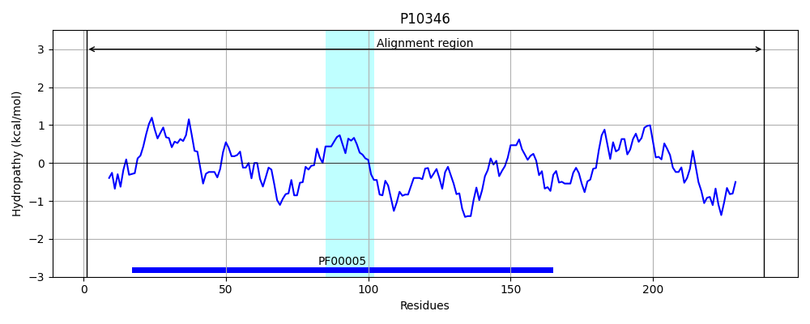
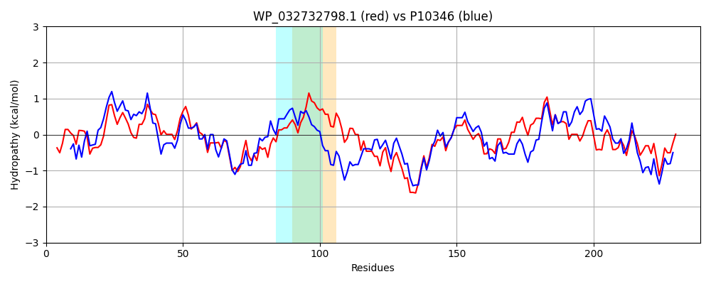

Hit Accession: P10346
Hit TCID: 3.A.1.3.2
Hit Description: gnl|BL_ORD_ID|8990 gnl|TC-DB|P10346|3.A.1.3.2 Glutamine transport ATP-binding protein glnQ - Escherichia coli.
Mach Len: 239
e:0.000000
Query TMS Count : 1
Hit TMS Count: 1
TMS-Overlap Score: 0.600000
Predicted Substrates:CHEBI:5432;glutamine
BLAST Alignment:
Score: 624 , Bit scores: 244 bits, E-value: 6.0e-82, Alignment length: 239, Percentage identity: 52
Query: 6 LLEMIGIDKTFGRQTVLKNCSLAVQRGETVVLIGPSGSGKSTLLRCVNMLSPADSGDVFFASQHISRGDVPAHKLRQRIGMVFQNYELFSHLTAAENIMLAPMTVLGMNRIDARKLADNLLAKVRINERADHFPDELSGGQQQRVAIARALAMKPELMLYDEPTSALDPEMIREVLEVMAELSAEGMTSMVVTHEMGFARRAANKILFMEDGEIIDRANTSDFFAGHVSDRAQRFLTQI 244
++E + K FG VL N L + +GE VV+IGPSGSGKSTLLRC+N L SGD+ ++ V +RQ GMVFQ + LF HLTA EN+M P+ V G N+ +A KLA LLAKV + ERA H+P ELSGGQQQRVAIARALA+KP++ML+DEPTSALDPE+ EVL+VM +L+ EGMT ++VTHE+GFA + A++++F++ G I + N S R Q FL +
Sbjct: 1 MIEFKNVSKHFGPTQVLHNIDLNIAQGEVVVIIGPSGSGKSTLLRCINKLEEITSGDLIVDGLKVNDPKVDERLIRQEAGMVFQQFYLFPHLTALENVMFGPLRVRGANKEEAEKLARELLAKVGLAERAHHYPSELSGGQQQRVAIARALAVKPKMMLFDEPTSALDPELRHEVLKVMQDLAEEGMTMVIVTHEIGFAEKVASRLIFIDKGRIAEDGNPQVLIKNPPSQRLQEFLQHV 239 | Protein Hydropathy Plots: |
|---|
 |  |
Pairwise Alignment-Hydropathy Plot:
|
|---|
|  |